Why data preprocessing?
- 现实世界中的数据存在问题
- 不完整：缺少属性值，缺少感兴趣的某些属性，或仅包含聚合数据
- 有噪声：包含错误或异常值
- 不一致：包含代码或名称上的差异
- 没有高质量的数据，就没有高质量的挖掘结果！
- 质量决策必须基于质量数据
- 数据仓库需要对质量数据进行一致的集成
Major Tasks in Data Preprocessing
- Data cleaning
- 数据清理，填充缺失值，平滑嘈杂数据，识别或删除异常值，并解决不一致性
- Data integration
- 数据集成，集成多个数据库、数据立方体或文件
- Data transformation
- 数据转换，归一化和聚合
- Data reduction
- 数据缩减，以体积较小的形式获得减少表示，但产生相同或相似的分析结果
- Data discretization
- 数据离散化，针对数值数据尤其重要的数据缩减的一部分
Forms of data preprocessing
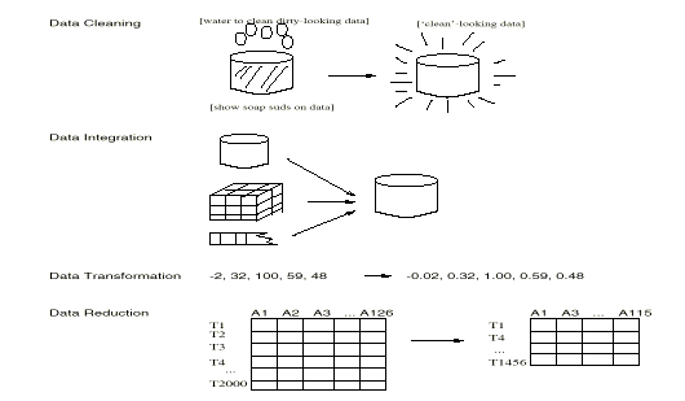
Data cleaning
Data cleaning tasks
- 填充缺失值
- 识别异常值和平滑嘈杂数据
- 更正不一致的数据
Missing Data
- 数据不总是可用
- 例如，许多元组对于几个属性没有记录的值，例如销售数据中的客户收入
- 缺失数据可能是由于
- 设备故障
- 与其他记录的数据不一致，因此被删除
- 由于误解而没有输入数据
- 在输入时可能不认为某些数据重要
- 不注册数据的历史或更改
- 可能需要推断缺失的数据。
How to Handle Missing Data?
- 忽略元组：通常在缺少类标签时执行（假设分类中的任务）——当每个属性的缺失值的百分比变化很大时，效果不佳。
- 手动填写缺失值：繁琐 + 不可行？
- 使用全局常数填充缺失值：例如，“unknown”，一个新的类别？
- 使用属性均值填充缺失值
- 使用同一类别中所有样本的属性均值填充缺失值：更智能
- 使用最有可能的值填充缺失值：基于推理的方法，如贝叶斯公式或决策树
Noisy Data
- 噪声：测量变量中的随机错误或方差
- 不正确的属性值可能是由于
- 错误的数据收集工具
- 数据输入问题
- 数据传输问题
- 技术限制（例如，输入缓存容量）
- 命名约定的不一致性
- 需要数据清理的其他数据问题
- 重复的记录
- 不完整的数据
- 不一致的数据
How to Handle Noisy Data?
- 分箱法：
- 首先对数据进行排序并分为（等深度）箱
- 然后可以通过箱均值、箱中位数、箱边界等进行平滑。
- 聚类
- 检测并删除异常值
- 计算机和人工检查的组合
- 检测可疑值并由人类检查
- 回归
- 通过将数据拟合到回归函数中平滑数据
简单的离散化方法：分箱
- 等宽（距离）分区：
- 将范围等分为 $N$ 个相等大小的间隔：均匀网格
- 最直接的方法：如果 $A$ 和 $B$ 是属性的最低和最高值，间隔的宽度将为：$W = (B-A)/N$。
- 但是异常值可能主导呈现，不处理偏斜的数据效果不佳。
- 等深（频率）分区：
- 将范围划分为 N 个间隔，每个间隔包含大致相同数量的样本
- 良好的数据缩放，管理分类属性可能会有些棘手。
Binning Methods for Data Smoothing
- 按价格（以美元计）排序的数据: 4, 8, 9, 15, 21, 21, 24, 25, 26, 28, 29, 34
- 划分为（等深）箱：
- Bin 1: 4, 8, 9, 15
- Bin 2: 21, 21, 24, 25
- Bin 3: 26, 28, 29, 34
- 通过箱均值进行平滑：
- Bin 1: 9, 9, 9, 9
- Bin 2: 23, 23, 23, 23
- Bin 3: 29, 29, 29, 29
- 通过箱边界进行平滑：
- Bin 1: 4, 4, 4, 15
- Bin 2: 21, 21, 25, 25
- Bin 3: 26, 26, 26, 34
Cluster Analysis
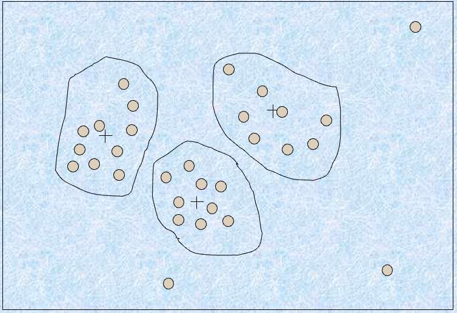
Regression
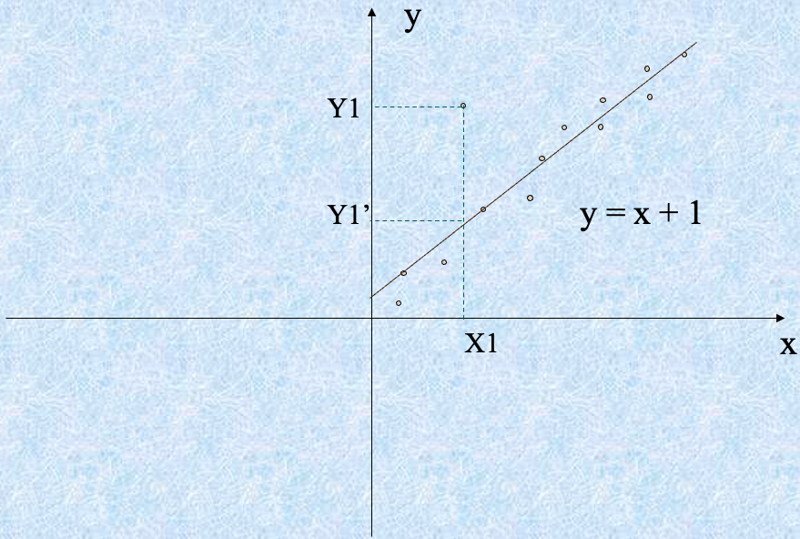
Data integration and transformation
Data Integration
数据集成
将来自多个来源的数据合并到一个一致的存储中
- 模式集成
- 集成来自不同来源的元数据
- 实体识别问题：从多个数据源中识别真实世界的实体，例如，$A.cust-id \eq B.cust-#$
- 检测和解决数据值冲突
- 对于相同的真实世界实体，来自不同来源的属性值不同
- 可能的原因：不同的表示，不同的比例，例如，米制与英制
在数据集成中处理冗余数据
- 在集成多个数据库时，经常会出现冗余数据
- 同一属性在不同数据库中可能有不同的名称
- 一个属性可能是另一个表中的“派生”属性，例如，年收入
- 通过相关性分析可能能够检测到冗余数据
- 仔细地集成来自多个来源的数据可能有助于减少/避免冗余和不一致，并提高挖掘速度和质量
Data Transformation
数据转换
- 平滑：从数据中去除噪音
- 聚合：总结、数据立方体构建
- 泛化：概念层次爬升
- 归一化：缩放到一个小范围内
- min-max normalization
- z-score normalization
- normalization by decimal scaling
- 属性/特征构建
- 从给定属性构建新属性
Data Transformation: Normalization
-
min-max normalization
- 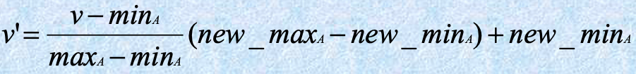
- 一个属性：收入，其值从 12000 到 98000
- 如果我们想要将值 73000 映射到一个新范围 [0.0,1.0]
- 那么 (73000-12000)/(98000-12000)(1.0-0)=0.716
-
z-score normalization
- 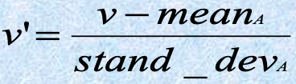
- 如果属性 “income” 的平均值为 54000，标准偏差为 16000
- 那么 (73000-54000)/16000=1.225
-
normalization by decimal scaling
- 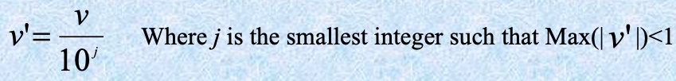
- 给定一个属性 A，其值从 -986 到 987，最大的绝对值是 987，所以我们得到 $j=3$ (即 1000)
- -986 将被转换为 -0.986
Data reduction
数据减少策略
- 仓库可能存储数千兆字节的数据：对完整数据集运行复杂的数据分析/挖掘可能需要很长时间
- 数据减少：获得数据集的减小表示，其体积要小得多，但产生相同（或几乎相同）的分析结果
- 数据减少策略
- 数据立方体聚合
- 降维
- 数值减少
- 离散化和概念层次生成
Data Cube Aggregation
数据立方体聚合
- 数据立方体的最低级别
- 与关注的个体的聚合数据
- 例如，电话呼叫数据仓库中的客户。
- 数据立方体中的多个级别
- 进一步减小要处理的数据大小
- 引用适当的级别
- 使用足以解决任务的最小表示
Dimensionality Reduction
降维
- 特征选择（即属性子集选择）：
- 选择一组最小的特征，使得给定这些特征的值的情况下不同类别的概率分布尽可能接近原始分布给定所有特征的值的情况
- 减少模式中的模式数量，更容易理解
- 有 $d$ 个特征，有 $2^d$ 个可能的子特征
- 如果特征数量太大，则测试所有这些子集可能是不可能的
- 因此，通常使用启发式方法来解决问题
Heuristic Feature Selection Methods
- 几种启发式特征选择方法：
- 在特征独立性假设下选择最佳单个特征：通过显著性检验选择。
- 最佳逐步特征选择：
- 首先选择最佳的单个特征
- 然后下一个最佳特征条件于第一个，…
- 逐步特征消除：
- 反复消除最差的特征
- 最佳组合特征选择和消除
- 决策树：ID3、C4.5 等。
Example of Decision Tree Induction
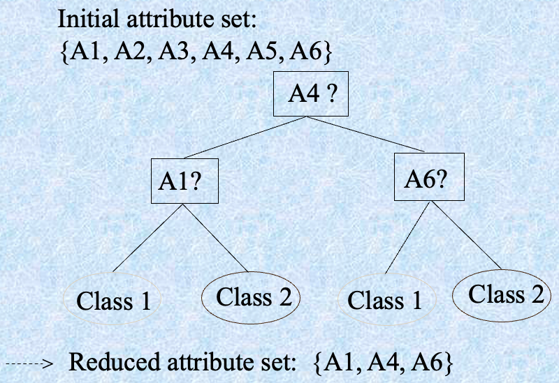
Data Compression
数据压缩
- 字符串压缩
- 有广泛的理论和调优的算法
- 通常是无损的
- 但只能在不扩展的情况下进行有限的操作
- 音频/视频压缩
- 通常是有损压缩，具有渐进改进
- 有时可以在不重建整个信号的情况下重建信号的小片段
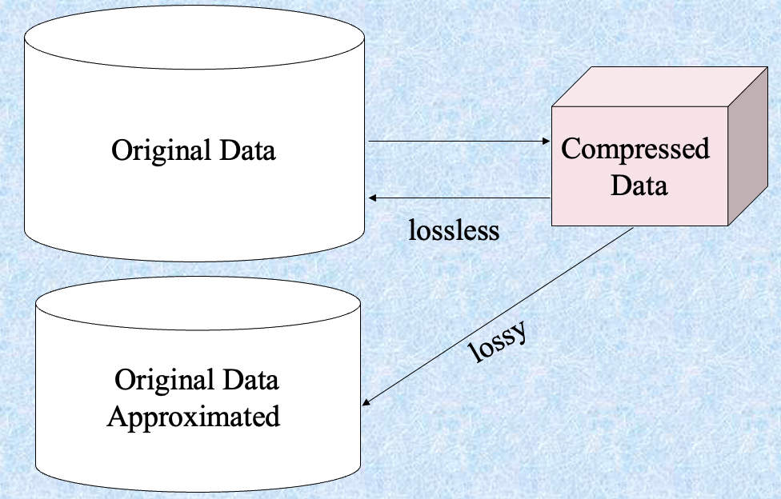
Numerosity Reduction
数值压减
- 参数方法
- 假设数据适合某个模型，估计模型参数，仅存储参数，并丢弃数据（除了可能的异常值）
- 回归
- 对数线性模型：在适当的边缘子空间上获得 m-D 空间中的点的值的乘积
- 假设数据适合某个模型，估计模型参数，仅存储参数，并丢弃数据（除了可能的异常值）
- 非参数方法
- 不假设模型
- 主要有：直方图、聚类、抽样
Regression and Log-Linear Models
回归和对数线性模型
-
线性回归：对数据建模以适应一条直线
- 通常使用最小二乘法拟合直线
-
多元回归：允许将响应变量 Y 建模为多维特征向量的线性函数
-
对数线性模型：逼近离散多维概率分布
-
线性回归：
- 两个参数， $\alpha$ 和 $\beta$ 指定该线，并且通过使用现有数据的 $Y_1$, $Y_2$, …, $X_1$, $X_2$, … 的已知值对它们进行估计
-
多元回归：
- 许多非线性函数可以转换为上述形式
-
对数线性模型：
- 联合概率的多维表通过较低阶表的乘积来逼近
- 概率：
直方图
- 一种流行的数据减少技术
- 将数据划分为桶，并存储每个桶的平均值（和）
- 在一维上使用动态规划可以最优化地构建
- 与量化问题相关
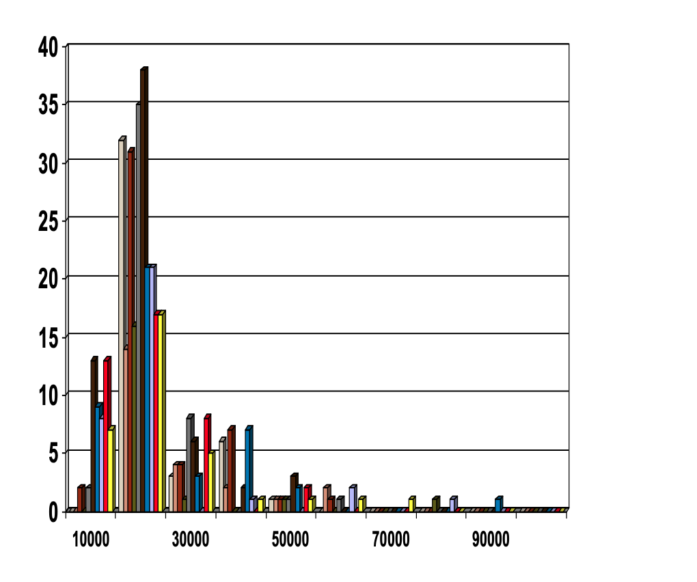
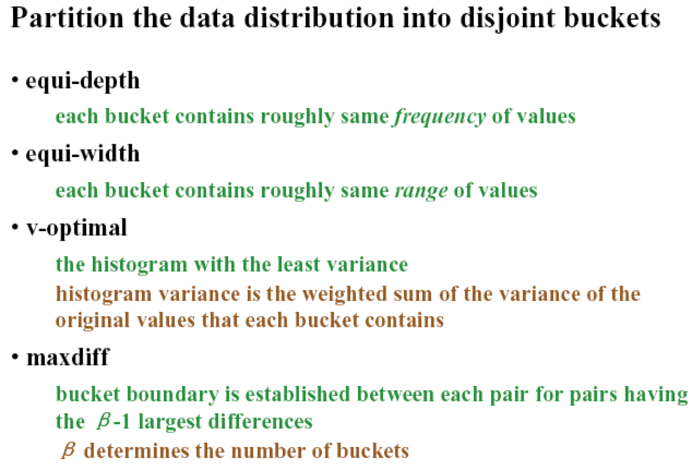
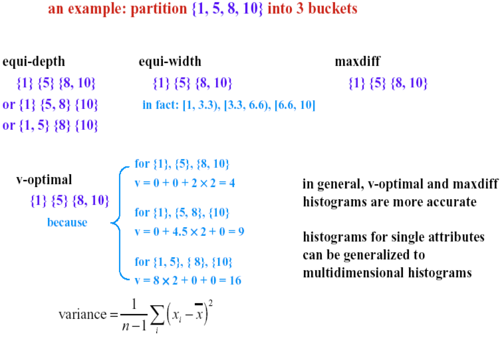
聚类
- 将数据集分为簇，可以仅存储簇表示
- 如果数据聚类，这可能非常有效，但如果数据“涂抹”则效果可能不好
- 可以具有层次聚类并存储在多维索引树结构中
- 有许多聚类定义和聚类算法的选择
抽样
- 允许挖掘算法在与数据规模的潜在子线性复杂性下运行
- 选择数据的代表子集
- 简单的随机抽样在存在偏斜时可能性能非常差
- 开发自适应抽样方法
- 分层抽样：
- 近似每个类别（或感兴趣的子群体）在整个数据库中的百分比
- 与偏斜的数据一起使用
- 分层抽样：
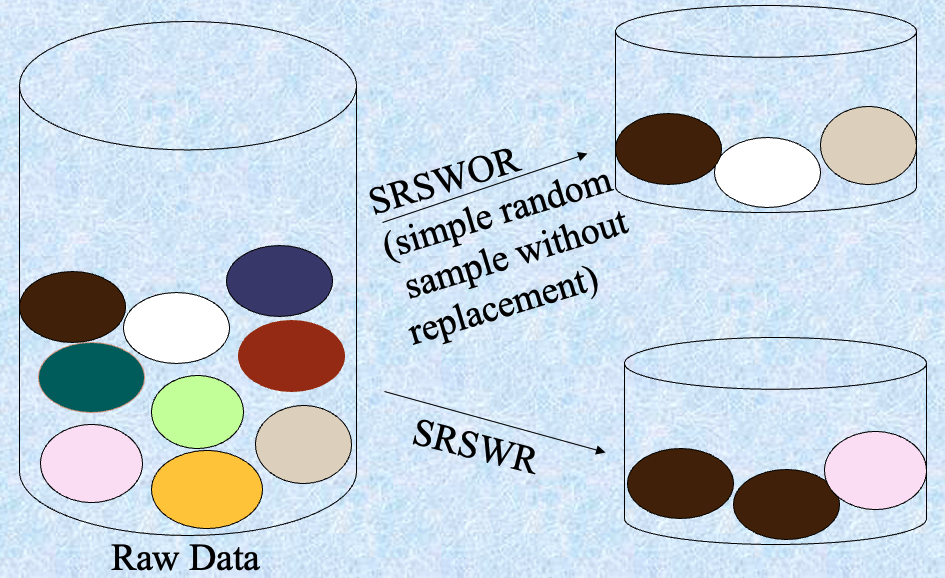
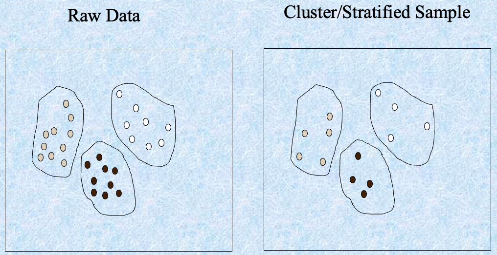
Discretization and concept hierarchy generation
离散化和概念层次生成
离散化
-
三种类型的属性：
- Nominal — 来自无序集的值
- Ordinal — 来自有序集的值
- Continuous — 实数
-
离散化:
- 将连续属性的范围划分为间隔
- 一些分类算法仅接受分类属性。
- 通过离散化减小数据大小
- 为进一步分析做准备
-
离散化
- 通过将属性范围划分为间隔，减少给定连续属性的值的数量。然后可以使用间隔标签替换实际数据值。
-
概念层次
- 通过收集并替换低层次概念（例如年龄属性的数值）为高层次概念（例如年轻、中年、老年），减少数据量。
Discretization and concept hierarchy generation for numeric data
用于数值数据的离散化和概念层次生成
- 分箱（参见前面的部分）
- 直方图分析（参见前面的部分）
- 聚类分析（参见前面的部分）
- 基于熵的离散化（稍后介绍）
- 自然分区的分割
Entropy-Based Discretization
给定样本集 $S$，如果使用边界 $T$ 将 $S$ 划分为两个间隔 $S_1$ 和 $S_2$，分区后的熵为
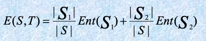
选择使熵函数在所有可能的边界上最小的边界作为二元离散化。
该过程递归应用于获得的分区，直到满足某些停止准则，例如
实验证明这可能减少数据量并提高分类准确性
Segmentation by natural partitioning
自然分区的分割
3-4-5 规则可用于将数值数据分割为相对均匀的“自然”间隔。
- 如果一个区间包含最显著数字上的 3、6、7 或 9 个不同的值，则将范围划分为 3 个等宽区间。
- 如果它包含最显著数字上的 2、4 或 8 个不同的值，则将范围划分为 4 个区间。
- 如果它包含最显著数字上的 1、5 或 10 个不同的值，则将范围划分为 5 个区间。
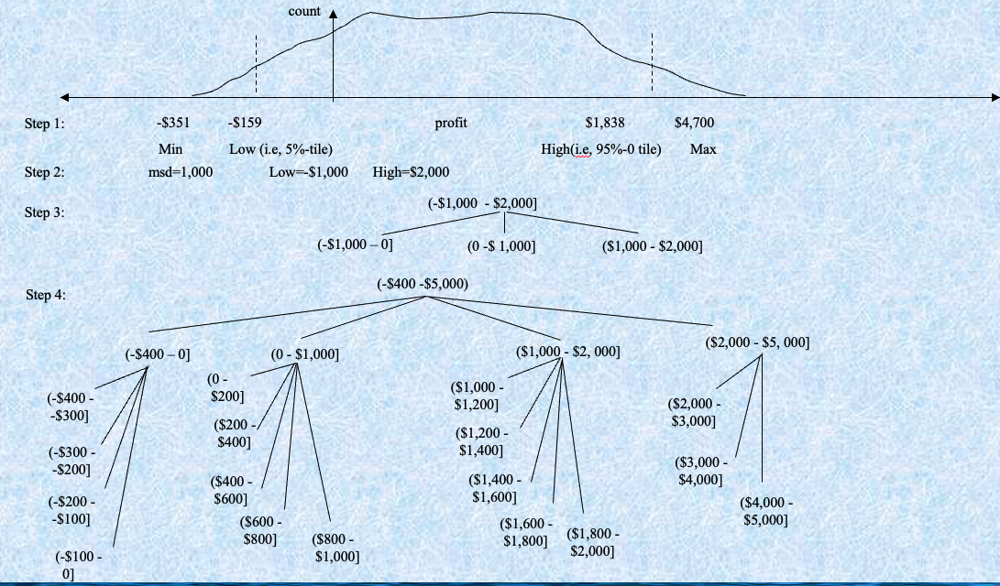
Concept hierarchy generation for categorical data
用于分类数据的概念层次生成
- 在模式级别或专家级别上由用户或专家显式指定属性的部分排序
- 通过显式的数据分组对层次的一部分进行指定
- 对属性集的一组属性进行指定，但不指定它们的部分排序
- 仅对一部分属性进行指定
Specification of a set of attributes
指定一组属性
- 可以基于给定属性集中每个属性的不同值的数量自动生成概念层次结构
- 具有最多不同值的属性放置在层次结构的最低级别。
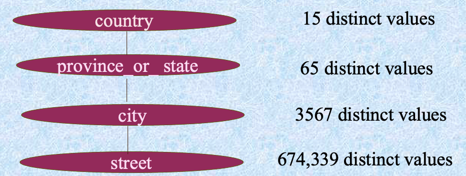
Summary
- Data preparation is a big issue for both warehousing and mining
- Data preparation includes
- Data cleaning and data integration
- Data reduction and feature selection
- Discretization
- A lot of methods have been developed but still an active area of research